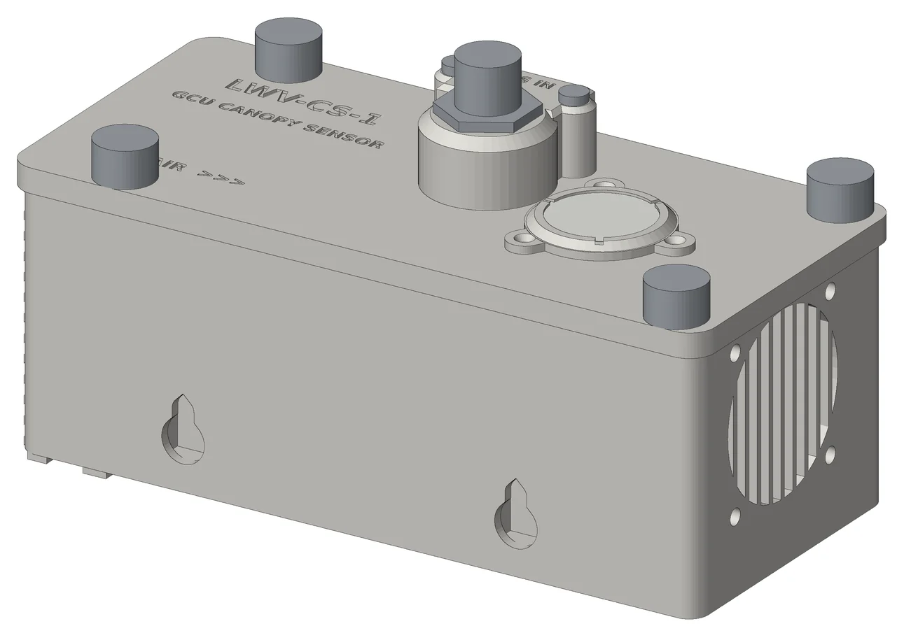
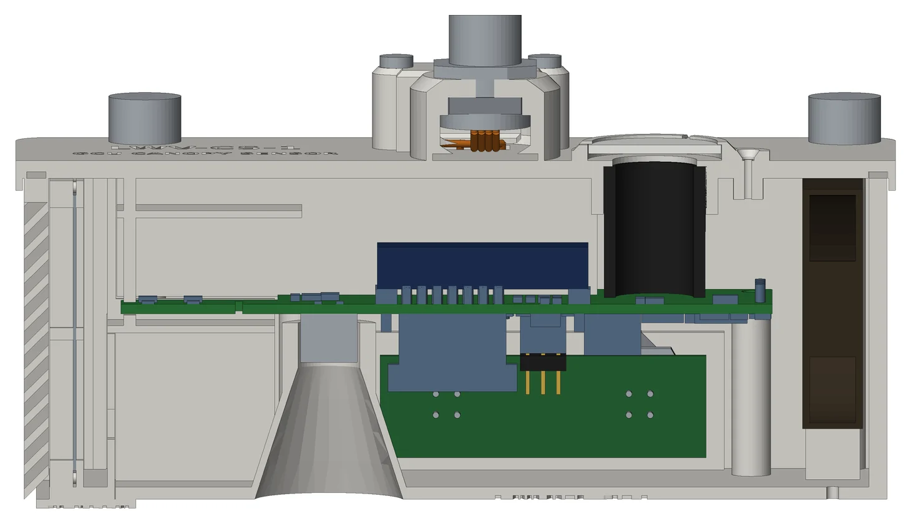
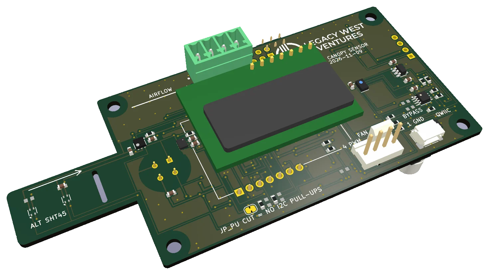
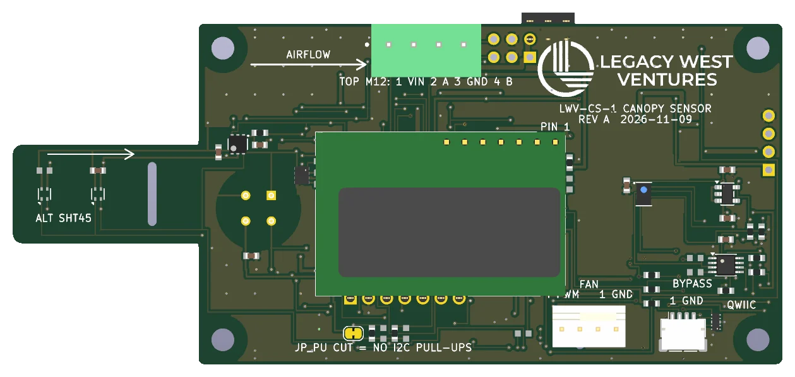
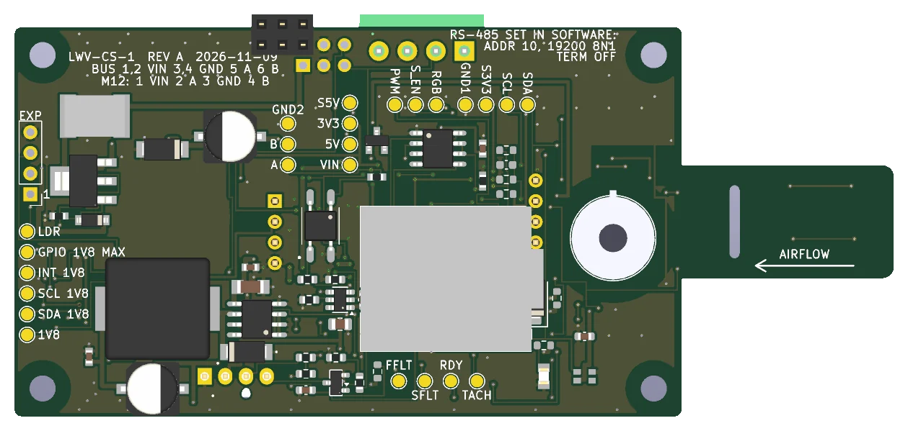
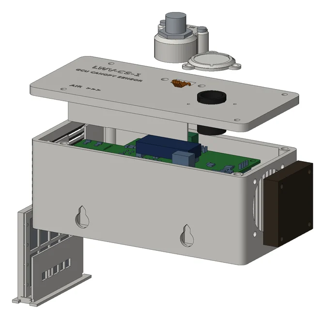
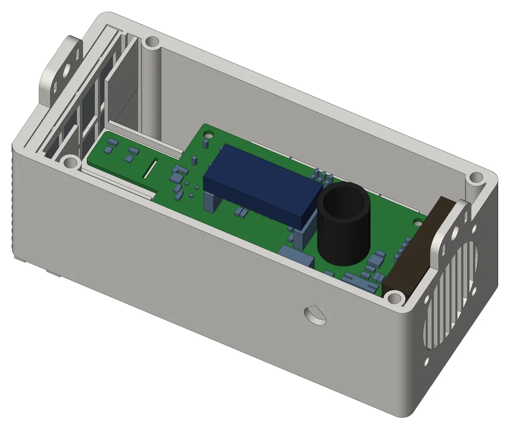

The CS-1 hangs just above the plants and measures what they live in: CO2, air temperature and humidity, leaf temperature, light and air quality. A small fan draws room air through a shaded duct past the sensors, so the readings describe the room, not a box warmed by the grow lights. It joins the pod's four-wire M12 cable next to the IR blasters, and it is built to be calibrated, checked and updated remotely, without a site visit.

The IR blasters have to sit where they can see the mini-splits, up high and in the cold air those units blow out. That is the wrong place to measure a room. The CS-1 hangs 20–40 cm above the canopy, away from the mini-split discharge, where the plants actually are.
It plugs into the same daisy-chained M12 cable that already carries 24 V and RS-485 to the blasters: IN on one side, OUT on the other. The GCU reads it once a minute, as it does today's sensor, and passes everything to GCU Cloud. A switch on the board sets its address, so it can replace today's sensor at the same address or run beside it at the next one.
| Reading | Sensor | Why this one |
|---|---|---|
| CO2 | E+E EE895, dual-wavelength infrared, 0–5000 ppm, ±(50 ppm + 3 % of reading) | Every flash of its lamp is measured at two wavelengths: one that CO2 absorbs and one it does not. The second cancels lamp ageing, so it stays calibrated in a sealed room that is enriched all day and never sees fresh air. Temperature- and pressure-compensated in the module. |
| Air temperature and humidity | Sensirion SHT45 with a filter membrane, ±0.1 °C, ±1.0 %RH typical | Sensirion's top grade, behind a membrane that keeps out dust, spray and spores, with a built-in heater that recovers it after long, very humid nights. |
| Leaf temperature | Melexis MLX90614, infrared, 35° view | Reads the leaves without touching them. Leaf temperature gives leaf VPD, which is what the plant responds to, next to the air VPD. |
| Light | ams AS7341: 8 colour bands plus clear, near-infrared and flicker, under a diffuser | Lights on and off, dimming steps, the red to far-red balance, flicker, and light leaks during the dark period. Shown as relative light until it is calibrated against a quantum sensor for each fixture type. |
| Air quality | Sensirion SGP41, VOC and NOx index | A trend against the room's own normal (100 = normal): a pesticide or cleaning-product application, a sulfur burner, something burning. |
| Barometric pressure | Inside the EE895 | Keeps the CO2 reading right at altitude, and is reported too. |
A sensor sitting in a box under grow lights reads warm and dry: the box heats up, and every degree of error at 25 °C costs 3–4 % of relative humidity. Greenhouse climate computers solve this with an aspirated measuring box, and the CS-1 is one. A quiet 40 mm Noctua fan at the far end pulls room air in through louvres and a washable screen, past the sensors in a shaded upper duct, and out through a grille.
The circuit board is the shelf that splits the box in two. Above it the upper duct carries only sensors, in the order the air meets them: humidity and temperature first, on a slotted tongue of board that keeps the board's own warmth away, then air quality, then CO2. Below it the lower channel carries the processor and power supply, so all of their heat leaves with the exhaust. The leaf thermometer looks down through its own sealed sleeve, out of the air stream.

Rev A is the prototype, so everything we expect to learn about in the test pods can be changed with a part swap, a jumper or a reprinted case part instead of a new circuit board.



Today's sensor is calibrated by opening its cover, carrying it outdoors and holding a button. The CS-1's CO2 correction is sent from GCU Cloud through the GCU and written into the module, where it is kept. The dual-wavelength design means it should rarely be needed.
Every sensor reports its own status, the fan reports its speed, and a run-hours timer says when the screen is due for a rinse. A reading that is not good is sent as "no data", never as the last good value. Firmware updates go over the same RS-485 cable, with the LWV I/O board's update method, which cannot leave the unit without a working image. The GCU side that sends an update down the cable is still to be built; until then units are updated on the bench.
The case is printed in-house in white ASA, which reflects the grow lights and stands up to UV and humidity. Eight parts print flat on our printer without supports. The screen slides out through the floor and the CO2 module lifts out under the lid, so both can be serviced with the box still hanging. Gaskets are EPDM foam: nothing in the box is silicone, which can poison gas sensors.


| Size | 143 × 64 × 57 mm, plus two hanging lugs. |
| Material | White ASA, 8 printed parts; the light tube in black ASA so no light leaks through its wall. |
| Hanging | Two lugs for a chain bridle or zip ties; hangs level, moved up with the crop. |
| Connections | M12 IN (female) and OUT (male) on the side wall, the same connector card as the IR blaster. |
| Weather | Louvres shed drips and block direct light; flat lid with a raised, chamfered diffuser bezel; two weep holes. |
| SenseCAP S-CO2-03 (today) | LWV-CS-1 | |
|---|---|---|
| CO2 | Infrared, ±(50 ppm + 3 %) | Dual-wavelength infrared, ±(50 ppm + 3 %), ageing- and pressure-compensated |
| Calibration | Open it, carry it outdoors, hold a button | From GCU Cloud, written into the module |
| Air temperature / humidity | ±0.2 °C / ±1.8 %RH, passive | ±0.1 °C / ±1.0 %RH, fan-drawn and shaded |
| Leaf temperature and leaf VPD | — | Yes |
| Light at the canopy, dark-period leaks | — | Yes |
| Air quality (VOC, NOx) | — | Yes |
| Pressure | — | Yes |
| Connector | M12 fitted by us | M12 IN and OUT built in, daisy-chains |
| Firmware updates | None | Over the RS-485 cable (GCU side to come) |
| Health | A value or silence | Per-sensor status, fan speed, screen-service timer |
The first units go to a few test pods and hang next to the existing sensor on the same cable. The existing sensor keeps address 10 and keeps running the pod. The CS-1 sits at 11, set by its switch, and is monitor only: it is recorded and charted, but the GCU will not hand control to it, even if the other sensor fails. That rule comes off when the data says it should.
| Power | 24 V DC from the M12 bus, about 0.7 W. Fused, reverse-polarity protected, surge clamped. |
| Bus | RS-485, Modbus RTU, 19 200 baud 8N1 by default; address 10 or 11 by switch, any address by software; 120 Ω termination switch. |
| CO2 | 0–5000 ppm, ±(50 ppm + 3 % of reading), dual-wavelength infrared, temperature and pressure compensated. |
| Air | ±0.1 °C, ±1.0 %RH typical; dew point and VPD; barometric pressure. |
| Leaf temperature | Infrared, 35° view, ±0.5 °C, emissivity set for leaves. |
| Light | 8 colour bands plus clear, near-infrared and flicker; relative light, on/off, dimming, dark-period leak flag. |
| Air quality | VOC and NOx index, 1–500. |
| Aspiration | Noctua NF-A4x10 5V PWM fan, speed monitored; about 1.9 m/s expected past the sensors at the default speed (1.0 m/s required). |
| Processor | Plug-in Seeed XIAO RP2350; firmware updates over RS-485. |
| Board | 108 × 48 mm including a 26 mm sensor tongue, 2 layers, ENIG finish (lead-free), acrylic conformal coat with the sensors masked. |
| Environment | Grow-room air, non-condensing at the sensors. |
Rev A is designed end to end. Nothing has been ordered, printed or flashed yet.
| Part | Where it is | What has been checked |
|---|---|---|
| Circuit board | Designed and routed, ready to order | Electrical and design-rule checks clean (0 errors, 0 unconnected); 419 automatic checks against the design brief, including every pin of the sensors and the processor; 88 machine-placed parts, all in stock at JLC on 2026-11-09. |
| Case | 8 parts modelled, ready to print | 63 of 63 fit checks: board, connectors, gaskets, the CO2 module's air gap, the leaf thermometer's view, light paths to the humidity and light sensors. No supports needed. |
| CS-1 firmware 0.1.0 | Written and building | 8 test suites pass on the bench computer, including the register map, the bus framing and the counters through simulated power cuts. The update code is byte-identical to the LWV I/O board's. |
| GCU firmware | CS-1 support on a development branch | Builds. Sensor type per slot with auto-detection, the monitor-only switch, the remote CO2 correction and the new readings. Not yet on a lab unit. |
| GCU Cloud and the app | To do | Sensor-type and monitor-only settings, the CO2 correction button, charts for the new readings. |